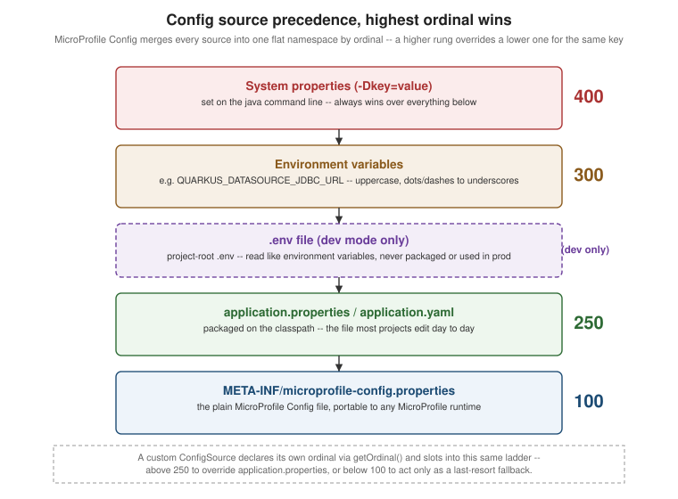

Configuration
|
This content was generated with the assistance of AI and should be verified against the official documentation before being relied on in production. |
Quarkus configuration is MicroProfile Config plus a substantial set of Quarkus- and SmallRye Config-specific extensions layered on top of it: additional config sources, type-safe group binding, profiles, and a build/runtime split that has no equivalent in a plain Jakarta EE or MicroProfile runtime. This page covers where configuration values come from and in what order, how to bind them onto Java code, how profiles and the build-time/runtime split change what "overriding a property" actually means, and the supporting mechanisms — environment-variable mapping, property expressions, custom sources and converters, validation, and the Dev UI — that round out the picture.
application.properties, application.yaml, and config-source precedence
A generated Quarkus project ships src/main/resources/application.properties — the traditional, still-default
format — as plain key=value pairs:
quarkus.http.port=8080
greeting.message=Hello
greeting.recipient.name=WorldQuarkus equally supports application.yaml (or application.yml) as a drop-in alternative, useful for
deeply-nested keys that read more naturally as YAML than as repeated dotted prefixes:
quarkus:
http:
port: 8080
greeting:
message: Hello
recipient:
name: WorldOnly one of the two should be used per project — if both are present, Quarkus merges them but .properties
wins on any key defined in both, which is easy to get wrong by accident. Either file is only one of several
config sources MicroProfile Config reads at startup; every source is merged into one flat property namespace,
and where the same key is defined in more than one source, the source with the higher ordinal wins:
| Config source | Ordinal | Notes |
|---|---|---|
System properties ( |
400 |
Set on the |
Environment variables |
300 |
See Environment-variable mapping rules below for the name-mangling rules. |
|
300 (dev mode only) |
Read like environment variables; never packaged into a JAR or native executable, so it has no effect outside
|
|
250 |
The file most projects edit day to day. |
|
100 |
The plain MicroProfile Config file, portable to any MicroProfile-compliant runtime, not just Quarkus. |
The figure below shows the same ladder visually, highest ordinal at the top:

A custom ConfigSource (covered later on this page) is free to declare any ordinal it likes via
getOrdinal(), and slots into this same ladder alongside the built-in sources — above 250 to override
application.properties unconditionally, or below 100 to act only as a last-resort default.
Injecting configuration: @ConfigProperty and @ConfigMapping
@ConfigProperty for a single value
org.eclipse.microprofile.config.inject.ConfigProperty injects one property directly into a field or
constructor/method parameter — the MicroProfile Config baseline, unchanged by Quarkus:
package com.example;
import jakarta.enterprise.context.ApplicationScoped;
import org.eclipse.microprofile.config.inject.ConfigProperty;
@ApplicationScoped
public class GreetingService {
@ConfigProperty(name = "greeting.message", defaultValue = "Hello")
String message;
public String greet(String name) {
return message + ", " + name + "!";
}
}It is convenient for a single, rarely-reused value, but — exactly as with Spring’s @Value — it scatters
configuration keys across the codebase, gives no structure to related properties, and has no way to express
"this whole group of properties belongs together".
@ConfigMapping for structured, type-safe configuration
io.smallrye.config.ConfigMapping binds a whole prefix of related properties onto an interface: SmallRye Config
generates the implementation at build time, so there is no boilerplate class to hand-write and no reflection at
runtime. It supports nesting, Optional<T> for properties that may be absent, default values via
@WithDefault, and a configurable naming strategy for how interface method names map onto property-file keys.
Given:
greeting.message=Hello
greeting.recipient.name=World
greeting.recipient.honorific=Ms.
# greeting.enthusiastic is intentionally absent -- @WithDefault supplies falsepackage com.example.config;
import java.util.Optional;
import io.smallrye.config.ConfigMapping;
import io.smallrye.config.WithDefault;
import io.smallrye.config.WithNamingStrategy;
import io.smallrye.config.NamingStrategy;
@ConfigMapping(prefix = "greeting", namingStrategy = NamingStrategy.KEBAB_CASE)
public interface GreetingConfig {
String message();
Recipient recipient();
@WithDefault("false")
boolean enthusiastic();
interface Recipient {
String name();
Optional<String> honorific();
}
}package com.example;
import jakarta.enterprise.context.ApplicationScoped;
import com.example.config.GreetingConfig;
@ApplicationScoped
public class GreetingService {
private final GreetingConfig config;
public GreetingService(GreetingConfig config) {
this.config = config;
}
public String greet() {
String honorific = config.recipient().honorific().map(h -> h + " ").orElse("");
String punctuation = config.enthusiastic() ? "!" : ".";
return config.message() + ", " + honorific + config.recipient().name() + punctuation;
}
}GreetingConfig needs no @ApplicationScoped or @Inject of its own — @ConfigMapping registers it as a CDI
bean on its own, injectable anywhere by its interface type. namingStrategy controls how a method name like
recipient() or a hypothetical maxRetryCount() maps to a property key; NamingStrategy.KEBAB_CASE (the
default) expects greeting.recipient.name and greeting.max-retry-count, while NamingStrategy.VERBATIM would
expect the method name unchanged and CamelCase (verbatim of the accessor’s camelCase form) expects
maxRetryCount literally.
|
|
Profiles
A profile is a named runtime mode — dev, test, and prod are built in, and any other name is a custom
profile — that changes which value a property resolves to without changing any code.
Built-in and custom profiles
Prefixing a property key with %<profile>. restricts that value to when the named profile is active:
quarkus.log.level=INFO
%dev.quarkus.log.level=DEBUG
%test.quarkus.log.level=DEBUG
%staging.greeting.message=Hello from stagingdev is active under quarkus:dev, test under ./mvnw test, and prod is the default once packaged.
%staging above is a custom profile with no special meaning to Quarkus itself — it is activated the same way
any non-default profile is, by setting the quarkus.profile system property (or the QUARKUS_PROFILE
environment variable) before the process starts:
java -Dquarkus.profile=staging -jar target/quarkus-app/quarkus-run.jarParent profiles
A profile can fall back to another profile’s values instead of only to the unprefixed default, by declaring
quarkus.config.profile.parent inside that profile’s own properties:
%staging.quarkus.config.profile.parent=prod
%prod.quarkus.log.level=WARN
%prod.quarkus.datasource.jdbc.max-size=20
# staging inherits everything from %prod above, then overrides just this one key
%staging.greeting.message=Hello from stagingWith staging active, a lookup first checks %staging., then falls back to %prod. before finally falling
back to the unprefixed key — letting an environment like staging reuse most of `prod’s configuration while
overriding only what actually differs.
Build-time-fixed vs. runtime-overridable properties
Not every property behaves the same way once packaged. Quarkus’s augmentation phase (covered on the
architecture page in this section) uses the value of some properties to decide what code to generate — which DataSource implementation to wire in, which security providers to register, whether to include
Hibernate ORM’s schema-generation bytecode at all. Once that decision has been baked into the fast-jar or native
executable, the property is build-time-fixed: it cannot be changed by an environment variable, a system
property, or an edited application.properties sitting next to the jar, because the code path that would react
to a different value was never generated in the first place. Other properties — a JDBC URL, a log level, a
thread-pool size — are runtime-overridable: augmentation leaves them as a placeholder that is resolved fresh
from the config sources on every process start.
Attempting to override a build-time-fixed property at runtime does not silently ignore the new value — Quarkus
fails startup with a io.smallrye.config.ConfigValidationException, naming the offending property, rather than
running with a mismatched configuration:
$ java -Dquarkus.datasource.db-kind=h2 -jar target/quarkus-app/quarkus-run.jar
Exception in thread "main" io.smallrye.config.ConfigValidationException: Configuration validation failed:
Environment variable QUARKUS_DATASOURCE_DB_KIND does not match the build time property value postgresql.
Build time property cannot be changed at runtime.
Key: quarkus.datasource.db-kind
Build time value: postgresqlThe fix is always the same: change the property’s value and rebuild, rather than trying to override it on the
already-built artifact. Each extension’s own reference page under
the generated all-config reference marks every property with its own
phase — Fixed at build time, Overridable at build time, or Overridable at runtime — so it never has to be
discovered by trial and error against a ConfigValidationException.
The diagram below contrasts the two resolution paths:
Environment variables, expressions, indexed properties, and custom sources
Environment-variable mapping rules
MicroProfile Config’s environment-variable mapping rules (the "environment-variables-mapping-rules" section of
the spec) let a dotted, hyphenated property key be looked up from a shell environment variable, which cannot
contain dots or hyphens: the key is upper-cased, and every . or - becomes _. quarkus.datasource.jdbc.url
is therefore satisfied by:
export QUARKUS_DATASOURCE_JDBC_URL=jdbc:postgresql://db:5432/appProperty expressions
A property value can reference another property with ${other.property}, optionally with a fallback if that
other property is undefined:
app.base-url=https://api.example.com
app.health-url=${app.base-url}/health
# falls back to 8080 only if greeting.port is not set anywhere
greeting.port=${greeting.port:8080}Indexed properties
A property that should bind to a List<T> can be written as a comma-separated value, or as separately-indexed
keys when individual elements need to be overridden independently (by profile, or from a different source):
mylist=a,b,c
# equivalent, and lets one element be overridden on its own
mylist[0]=a
mylist[1]=b
mylist[2]=cCustom `ConfigSource`s and `Converter`s
A ConfigSource (org.eclipse.microprofile.config.spi.ConfigSource) plugs in an arbitrary backing store — a secrets manager, a database table, a remote HTTP endpoint — as a first-class part of the ordinal ladder
described earlier, registered via META-INF/services/org.eclipse.microprofile.config.spi.ConfigSource naming
the implementation class. A Converter<T> (org.eclipse.microprofile.config.spi.Converter<T>) teaches
MicroProfile Config how to turn a raw string value into an application-specific type — an enum with
non-standard names, a value object, a custom identifier type — registered the same way, via
META-INF/services/org.eclipse.microprofile.config.spi.Converter.
Configuration validation
Constraint annotations placed directly on a @ConfigMapping interface’s accessor methods are validated once,
at startup, by SmallRye Config’s own validation support — not by injecting a Validator manually. A
misconfigured value fails fast with a clear message naming the property and the violated constraint, rather
than surfacing as a confusing NullPointerException or an out-of-range value deep inside application code the
first time it is used.
The Dev UI config editor
In dev mode, the Dev UI at http://localhost:8080/q/dev/ includes a live,
searchable config-property browser and editor: every known property from every extension on the classpath, its
current effective value, which source that value came from, and — for runtime-overridable properties — the
ability to change it and see the effect immediately, without restarting the dev-mode process.
The master reference
All configuration options is generated directly from the extensions actually present on a project’s classpath: every property any of them defines, its type, default, and build/ runtime phase. It is the definitive answer to "does this property exist, and can I override it after packaging" for any extension, and is more current than any hand-maintained list could be.